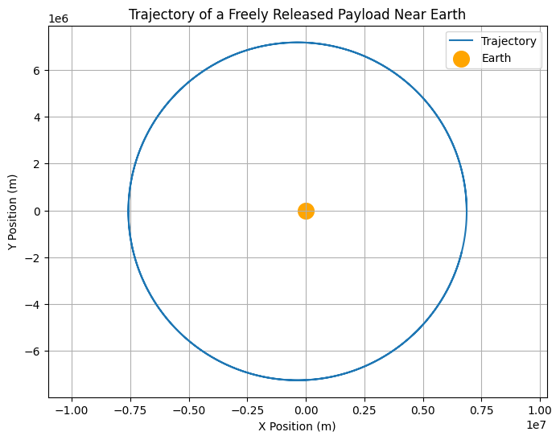

Problem 3
Problem 3: Trajectories of a Freely Released Payload Near Earth
1. Introduction
When a payload is released from a moving rocket near Earth, its trajectory is determined by: - Initial velocity (relative to Earth), - Altitude (distance from Earth's center), - Gravity (attractive force exerted by Earth).
Possible trajectories include: 1. Elliptical Orbits (\( v < v_2 \)): If the payload remains gravitationally bound to Earth. 2. Parabolic Escape (\( v = v_2 \)): The minimum velocity needed to break free from Earth's gravity. 3. Hyperbolic Trajectory (\( v > v_2 \)): If the payload completely escapes Earth's gravity.
Key Question:
How does the payload's initial velocity and release altitude determine whether it remains in orbit, falls back to Earth, or escapes? 🚀
2. Theoretical Background
Newton's Law of Gravitation
The force acting on the payload due to Earth's gravity is:
where: - \( G = 6.67430 \times 10^{-11} \) m³/kg/s² (gravitational constant), - \( M = 5.972 \times 10^{24} \) kg (Earth's mass), - \( r = R_E + h \) is the payload’s distance from Earth’s center, where \( R_E = 6.371 \times 10^6 \) m (Earth's radius) and \( h \) is the altitude.
Equations of Motion
Newton’s second law gives us:
which results in a two-body problem that needs numerical integration.
Key Velocities:
-
Orbital Velocity (\( v_1 \)):
[ v_1 = \sqrt{\frac{GM}{r}} ] The velocity required for a stable circular orbit. -
Escape Velocity (\( v_2 \)):
[ v_2 = \sqrt{\frac{2GM}{r}} ] The velocity required to escape Earth's gravitational pull.
3. Computational Simulation
We'll use Runge-Kutta numerical integration to simulate payload motion in 2D.

4. Analysis of Trajectories
1. If \( v < v_1 \) (Suborbital) → Payload Falls Back to Earth:
- The payload follows a parabolic arc, reaching max altitude before reentering.
- Example: Ballistic missiles, suborbital tourism (Blue Origin, Virgin Galactic).
2. If \( v = v_1 \) (Circular Orbit) → Payload Stays in Orbit:
- The payload maintains a circular orbit around Earth.
- Example: Satellites (ISS, GPS, Starlink).
3. If \( v_1 < v < v_2 \) (Elliptical Orbit) → Payload in a Non-Circular Orbit:
- The payload follows an elliptical orbit, returning after each cycle.
- Example: Molniya orbits, Hohmann transfer maneuvers.
4. If \( v = v_2 \) (Escape Trajectory) → Payload Leaves Earth:
- The payload follows a parabolic trajectory, never returning.
- Example: Space probes leaving Earth (Voyager, New Horizons).
5. If \( v > v_2 \) (Hyperbolic Escape) → Payload Leaves with Excess Speed:
- The payload follows a hyperbolic trajectory, escaping Earth's gravity.
- Example: Interplanetary missions (Mars rovers, Europa Clipper).
5. Real-World Applications
1. Satellite Deployment
- The right initial velocity and angle ensure satellites enter stable orbits.
- Low Earth Orbit (LEO): 300-2000 km altitude (ISS, Starlink).
- Geostationary Orbit (GEO): 35,786 km altitude (Weather satellites).
2. Spacecraft Reentry
- If a payload loses velocity, it reenters Earth’s atmosphere.
- Reentry capsules (Soyuz, Dragon, Orion) use heat shields to survive.
3. Interplanetary Missions
- Escape velocities determine if a spacecraft reaches the Moon, Mars, or beyond.
- Gravity assists (e.g., slingshot around Jupiter) are used to save fuel.
6. Discussion & Extensions
Limitations of the Model
- Does not include air resistance (important for reentry trajectories).
- Assumes Earth is a perfect sphere (real gravity varies slightly).
- No external forces (like solar radiation pressure or thruster burns).
Future Extensions
- Include atmospheric drag for more accurate reentry calculations.
- Three-body problem (Earth-Moon-Spacecraft interactions).
- Simulate real mission trajectories (e.g., Apollo, Artemis, SpaceX launches).
7. Conclusion
This problem demonstrates how initial velocity determines a payload’s fate: - Too slow → falls back to Earth 🌍. - Just right → stays in orbit 🛰️. - Fast enough → escapes Earth's gravity 🚀.
Using numerical methods (Runge-Kutta), we simulated different payload trajectories, visualizing their motion in space. This is crucial for satellite deployment, space station docking, and interplanetary travel.